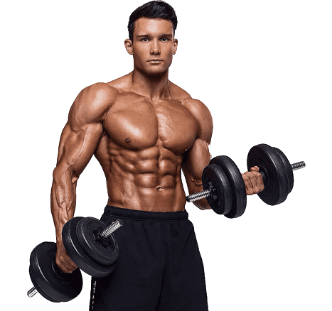

SOBRE A TABELA DE TREINO

A Tabela de Treino é uma ferramenta usada para planejar e organizar os exercícios, séries e repetições a serem realizados durante um programa de treinamento de musculação.
Ela é projetada para ajudar os indivíduos a alcançarem seus objetivos de condicionamento físico, como ganho de força, hipertrofia muscular ou perda de gordura.
Tabela Masculina
| Exercício | Séries | Repetições |
|---|---|---|
| Supino reto com barra | 3 | 12 |
| Supino inclinado com barra | 3 | 12 |
| Crucifixo na máquina | 3 | 12 |
| Tríceps apoiado no banco | 3 | 1 |
| Tríceps na polia alta com barra reta | 3 | 10 |
| Tríceps na polia alta com corda | 3 | 10 |
| Exercício | Séries | Repetições |
|---|---|---|
| Puxada com barra no purlley | 4 | 12 |
| Puxada pela frente com triângulo no purlley | 4 | 12 |
| Remada na máquina de cabos | 4 | 12 |
| Rosca bíceps direta com barra | 3 | 10 |
| Rosca bíceps martelo em pé com halteres | 3 | 10 |
| Rosca bíceps no cabo usando a corda | 3 | 10 |
| Exercício | Séries | Repetições |
|---|---|---|
| Agachamento | 3 | 12 |
| Extensora | 3 | 12 |
| Leg press | 4 | 12 |
| Flexora deitada | 3 | 10 |
| Cadeira abdutora | 4 | 10 |
| Panturrilhas | 4 | 10 |
| Exercício | Séries | Repetições |
|---|---|---|
| Supino reto com barra | 3 | 12 |
| Supino inclinado com barra | 3 | 12 |
| Crucifixo na máquina | 3 | 12 |
| Tríceps apoiado no banco | 3 | 10 |
| Tríceps na polia alta com barra reta | 4 | 10 |
| Tríceps na polia alta com corda | 3 | 10 |
| Elevação lateral com halteres | 4 | 10 |
| Elevação frontal com halteres | 4 | 10 |
| Exercício | Séries | Repetições |
|---|---|---|
| Puxada com barra no purlley | 4 | 12 |
| Puxada pela frente com triângulo no purlley | 4 | 12 |
| Remada na máquina de cabos | 4 | 12 |
| Rosca bíceps direta com barra W | 3 | 10 |
| Rosca bíceps unilateral com halteres | 3 | 10 |
| Rosca bíceps martelo em pé com halteres | 3 | 10 |
| Rosca de Punhos | 3 | 10 |
| Rosca inversa | 3 | 10 |
Tabela Feminina
| Exercício | Séries | Repetições |
|---|---|---|
| Agachamento | 3 | 12 |
| Leg press | 3 | 12 |
| Extensora | 4 | 12 |
| Elevação pélvica | 4 | 10 |
| Agachamento sumô | 3 | 10 |
| Extensão de quadril coice no cross | 3 | 10 |
| Exercício | Séries | Repetições |
|---|---|---|
| Supino reto com barra | 3 | 10 |
| Supino inclinado com barra | 3 | 10 |
| Peck deck | 3 | 10 |
| Tríceps apoiado no banco | 3 | 12 |
| Tríceps na polia alta com barra reta | 3 | 12 |
| Tríceps na polia alta com corda | 3 | 12 |
| Elevação lateral com halteres | 3 | 12 |
| Elevação frontal com halteres | 3 | 12 |
| Exercício | Séries | Repetições |
|---|---|---|
| Agachamento | 3 | 12 |
| Leg press | 3 | 12 |
| Flexora deitada | 4 | 12 |
| Stiff | 3 | 12 |
| Elevação pélvica | 4 | 10 |
| Agachamento sumô | 3 | 10 |
| Extensão de quadril coice no cross | 3 | 10 |
| Panturrilha | 4 | 10 |
| Exercício | Séries | Repetições |
|---|---|---|
| Puxada com barra no purlley | 3 | 12 |
| Puxada pela frente com triângulo no purlley | 3 | 12 |
| Remada na máquina de cabos | 3 | 12 |
| Rosca bíceps direta com barra W | 3 | 10 |
| Rosca bíceps unilateral com halteres | 3 | 10 |
| Rosca bíceps martelo em pé com halteres | 3 | 10 |
| Rosca de Punhos | 3 | 10 |
| Rosca inversa | 3 | 10 |
| Exercício | Séries | Repetições |
|---|---|---|
| Agachamento | 3 | 12 |
| Extensora | 3 | 12 |
| Leg press | 4 | 12 |
| Flexora deitada | 3 | 10 |
| Cadeira abdutora | 4 | 10 |
| Panturrilhas | 4 | 10 |
Conheça Nossa Equipe
A plataforma Gym Academy surgiu diante de um Trabalho universitário.
E foi Desenvolvida por Vitor Ricardo e Pedro Henrique